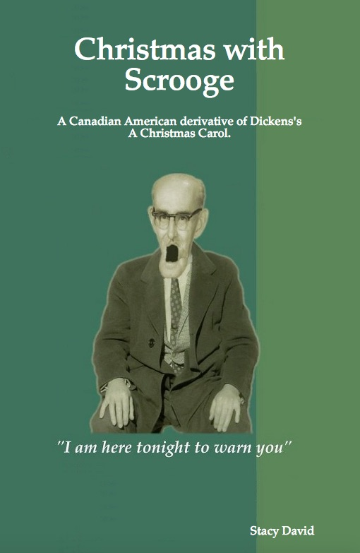
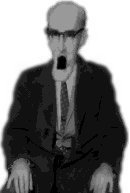

Writing
Christmas with Scrooge
|  | by, |
Posted to ebook sellers.
» Amazon Kindle edition
» Barnes & Noble Nook book
» Kobo ebook
Print book version
» Paperback
» Hardcover
____________
Copyright © 2012, Stacy David, United States of America.
All rights reserved.
No part of this book may be reproduced or transmitted in
any form or by any means, electronic or mechanical,
without permission in writing from the author.
First Edition, version 1.0
Cover by Tiger Farm Press.
Scrooge, American Style is a derivative of Charles Dickens's A Christmas Carol. A Christmas Carol was first published in 1843.
TIGER FARM PRESS  CALIFORNIA
CALIFORNIA
Favorite Lines
“Merry Christmas? What reason have you to be merry? You're poor.”
“What reason have you to be miserable? You're rich.”
“I am the Ghost of Christmas Past.”
“Long Past?”
“No. Your past.”
On the sofa sat a beautiful young woman so much like his past girlfriend that Scrooge believed this woman to be her, until he saw her enter the room.
With a wink, the Ghost of Christmas Present said, “Do you still believe in Santa Claus?”
“Why help the poor? Everyone needs something.”
“What of it if he dies? Better do it and decrease the surplus population.”
He had been unaware of the breadth and depth of World Christmas.
The other man, skinny as a broom stick, was lighting a
cigarette, and asked, “When did he die?”
“I don't mind going if drinks are provided.”
Scrooge had a morbid creepy curiosity to draw back the dead man's bed sheet.
“Today?” replied the boy, “Why it's Christmas Day.”
Introduction
A Christmas Carol is a story made familiar to many of us through movie adaptations such as Disney’s A Christmas Carol with the Canadian-American actor Jim Carrey. However, movies skip parts of the original story. This book contains the complete Charles Dickens storyline with all the characters.
I wrote this book using suggestions from Stephen King’s storytelling book, On Writing. I used the writing style outlined by William Strunk Jr. and E. B. White, in The Elements of Style. After being taught by Strunk, White went on to write that American classic, Charlotte’s Web, which is a wonderful story to read. Since A Christmas Carol was missing Christmas trees, while writing modern references, I decorated Scrooge, American Style with those colorfully lighted trees we all love.
—Stacy David, a Canadian-American author
Business on Christmas Eve
Marley is dead, dead as a doornail. There is no doubt about it, because years ago, on a Christmas eve much like this one, the register of his burial was signed by the clergyman, the undertaker, and the chief mourner who’s name was Ebenezer Scrooge. Scrooge was his sole friend. Even so, he was not dreadfully broken up by the death, except that he had lost an excellent business partner. On the very day of the funeral, Scrooge, the executor of the will, solemnized the closing of Marley’s books as an undoubted bargain, in fact, a windfall for himself.
As uncaring as the surviving partner was, Scrooge never removed Marley’s name from the business sign. There it stood above the office door: Scrooge and Marley. Sometimes people new to the business would call Scrooge Scrooge, and sometimes they would call him Marley, but Scrooge answered to both names. It was all the same to him, for he was a tight-fisted, squeezing, grasping, clutching, money grubbing, greedy, frozen old fart! His cold shrunken heart made his skin pale, his eyes red, his thin lips blue, and his hair frosty white. He even lived in low temperatures by keeping his office as cold as an icebox throughout the fall and winter, and did not thaw it one degree at Christmas time. External heat and cold had little influence on this man. No wind blows colder than the breath of his shrewd bitter voice.
When walking down the street, he walked at a brisk pace, head down, never looking up at people’s faces. Nobody ever stopped him in the street to say, “Scrooge, how are you today? Let’s have lunch sometime.” No beggars put out a hand to him, no children asked him the time of day, no man or woman ever once inquired the way to such and such a place. Even the blind man’s dog seemed to know him, and when the dog saw him coming, he tugged his owner aside as if to say, “Stay out of the way of the evil eye.” But what did Scrooge care? He preferred having his own way along the crowded path of life, he wanted all human sympathy to keep its distance.
Once upon a time, on what should have been a wonderful day for Scrooge, on Christmas Eve no less, he was busy in his office counting numbers. Outside was cold and bleak. The City clocks had only past four, but it was quite dark already because fog had rolled in so thick that the opposite buildings were mere phantoms. To see the dingy haze obscuring everything, one might have thought nature was brewing a mysterious potion on a monumental scale.
Then, in bright contrast to the outside, came a hearty, “Merry Christmas! God bless you!” It was the voice of Scrooge’s nephew.
Startled, Scrooge said, “Bah! Humbug!”
His nephew had so heated himself with rapid walking in the fog and frost, he was all aglow, his face handsome, his eyes sparkling. “Christmas a humbug? Surely you don’t mean it?”
“I do,” said Scrooge. “Merry Christmas? What reason have you to be merry? You’re poor.”
“Well then,” returned the nephew with a chuckle, “What reason have you to be miserable? You’re rich.”
Scrooge, having no better answer, again said, “Bah Humbug!”
“Why be cross?”
“What else can I be when I live in a world of fools? What is Christmas to you but a time for buying gifts on credit when you have no money? You are another year older, and not one hour richer.”
“There are many things in this world from which I have derived good, but not profited,” replied the nephew, “Christmas being one of them.”
“Keep Christmas your own way,” his uncle said, “and let me keep it my way.”
“Keep it? But you don’t keep it. I have always thought of Christmas time—along with the veneration due to its sacred name and origin—as a good time for giving, a time to be charitable. It is a pleasant time for family and fun. The only time of the year when men and women seem to open their hearts and give good cheer to all. And therefore uncle, though it has never put a dollar in my pocket, I believe Christmas is good, and will do good for me; and I say, God bless it!”
The clerk, at the desk near the door, applauded.
“Let me hear another sound from you,” said Scrooge, “and you’ll keep your Christmas by losing your job!”
The clerk went silent, head back down to his work.
“Uncle Ebenezer,” pleaded the nephew.
Facing his nephew, “Fred, if I could work my will, every idiot who goes about with ‘Merry Christmas’ on his lips would be boiled with his own Christmas gravy, and buried with a stake of holly through his heart!”
“Don’t be angry, uncle. Come! Dine with me, my wife and our friends and family tomorrow.”
“But why?” questioned Scrooge.
“But why? Why what?”
“Why on earth did you marry so young? So poor?”
“Because I fell in love.”
“Because you fell in love!” growled Scrooge with sarcasm as thick as pea soup, as if that were the only thing in the world more ridiculous than a Merry Christmas.
“But uncle, you never came to see me before I married. Why give it as a reason for not coming now?”
“Good afternoon to you!,” said Scrooge.
“Ebenezer, I want nothing from you, I ask nothing of you. Why can’t we be friends?”
“Good afternoon.”
“I am sorry, with all my heart, to find you so resolute. However I’ll keep my Christmas humor to the last.” With a silly grin, he said, “A Merry Christmas uncle!”
“Good afternoon!”
“And A Happy New Year!”
His nephew took leave without an angry word. Stopping at the outer door, he bestowed the Seasons Greetings on the clerk, who, cold as he was, in this freezer of an office, was warmer than Scrooge; for he returned the greeting cordially.
“I’ll be dammed,” muttered Scrooge. “There’s another fool, my clerk. Barely enough to live on, and yet he has a wife and kids, and is talking about a Merry Christmas.”
This lunatic of a clerk, on letting Scrooge’s nephew out, had let two other people in. They were portly gentlemen, pleasant to behold, and now standing with their hats off in Scrooge’s office. They had books and papers in their hands, and bowed to him.
One of the gentlemen, referring to his list, says, “I believe I have the pleasure of addressing Mr. Scrooge or Mr. Marley?”
“Mr. Marley died seven years ago this very night,” Scrooge replied.
“On Christmas Eve. Sorry to hear that,” said the gentleman as he handed Scrooge a pamphlet titled, Help the Poor, Help the Children, Help This Christmas Season.
On the word Help, Scrooge frowned and shook his head. On the word Christmas, he handed the pamphlet back.
“During this festive season, Mr. Scrooge,” said the gentleman, “it is more than usual that we should be charitable to the poor and destitute children who suffer greatly. Many are in want of common necessities, thousands are in want of common comforts.”
“Is there government welfare?” demanded Scrooge. “Is it still operational?”
“Yes,” returned the gentleman, “I wish it was not necessary.”
“And are there no orphanages?”
“Plenty.”
“Is there still Juvenile Hall for kids that go bad?”
“Yes, that cold jail for children still exists.”
“I am very glad to hear it,” said Scrooge. “I was afraid, from what you said at first, that something had occurred to stop them in their usefulness.”
Looking doubtful the fat fellow continued, “In the Christian cheer of mind, a few of us are endeavoring to raise a fund to buy the poor some groceries and toys for poor and destitute children. We choose this time because it is a time when people are kind to their fellow man. What shall I put you down for?”
“Nothing!” said Scrooge. “I don’t rejoice at Christmas, and I don’t care to make idle people merry. I help to support the establishments I have mentioned. They cost enough through taxes.”
“It’s never enough and many suffer, some die.”
“What of it if they die? Better to decrease the surplus population.”
“But sir, certainly you don’t mean that?”
“Good afternoon!” concluded Scrooge.
Seeing clearly that it would be useless to pursue their point, the gentlemen withdrew.
Having swiftly ended a fruitless transaction, Scrooge resumed his labors with an improved opinion of himself. Meanwhile, the foggy darkness thickened, cars put their headlights on, and street lights came on early.
The outside may have been frigid, however the hearts of a little group of children were warm as they walked the streets singing Christmas carols. On hearing their song, Scrooge’s clerk went to the door and opened it. But at the first sound of, “God bless you, Merry Gentlemen, may nothing you dismay!” Scrooge seized the door, and slammed it shut with such energy, the singers fled in terror.
The office remained quiet after that. The clerk dared not move, and at length the hour of closing arrived. With an ill will Scrooge stood up, and tacitly admitted this fact to the expectant clerk who instantly jumped up and put on his coat to leave.
Scrooge said, “You’ll want all day off tomorrow, I suppose?”
“Yes sir.”
“It’s not fair to me as an employer to pay, and the employee not to work.”
The clerk smiled faintly, “It is only once a year.”
“It is a poor excuse. But I suppose you must have the whole day. Be here early the next morning.”
The clerk promised he would, and Scrooge walked off with a growl. The office was now closed for the evening, and closed for the twenty-fifth of December.
Marley’s Ghost
Scrooge took his dinner in his usual melancholy restaurant. After reading the newspapers he went home to his house in which he had partitioned off an apartment. The rest was rented out as offices, now empty because of the holidays.
The fog and frost hung about the black doorway in such a way that the large door knocker seemed as if to sit in mournful meditation. After putting his key in the lock, he jerked his hand back and stood frozen as the knocker change into its previous owner's deceased face, Marley's face. It was the burning red color of a lobster being boiled to death. Without malice, the face simply stared at Scrooge with ghostly spectacles turned up on its ghastly forehead, the eyes open, motionlessly dead. As Scrooge stared wide-eyed at this phenomenon, it was a knocker again. To say he was not startled, or that his blood did not curdle, would be untrue.
He returned his shaking hand to the key, turned it, walked in, and shut the door with a bang. The sound resonated as loud as thunder, every office having a hollow echo of its own. This brought Scrooge back to his senses. He chuckled to himself, he was not a man to be frightened by echoes.
In the darkness he switched on the entryway’s low energy light. It was only a dim light in this wide, high space. He paused with a moment’s irresolution, checked the time on the grandfather clock, the sole piece of furniture in the hall, and said, “Whatever!” He walked to the stairs and started up. Below him, Scrooge thought he saw a ghostly hearse roll silently by in the gloom. His steps quickened. Not caring for phantoms, he said aloud to himself, “Darkness is cheap, and I like cheap.”
Sufficiently unsettled by the afore mentioned events, Scrooge uncharacteristically turned on all the lights in his bedroom and gave it a thorough inspection to make sure all was right—nobody under the bed, no monsters in the closet. Reassured, he closed the door and locked himself in, then double-locked himself in which was not his usual custom. Thus secured against surprise, he took off his business suit, put on his pajamas, robe, and slippers. Rather than turn up the heat, he wrapped himself in a blanket, and sat down to read a magazine.
Despite his interest in the article on money counting, his thoughts returned to the face of Marley on the door and the fact that this is the anniversary of his death. “Humbug!” said Scrooge. But it was not enough to settle his mind so he got up and walked several turns around the room before sitting down again. As he threw his head back in the chair, his glance happened to rest upon a bell for calling a family to dinner. As no family had lived in this house for a generation, the bell sat tarnished and unused. To his great astonishment and dread, the bell began to swing. It swung softly at the outset scarcely making a sound, but soon it rang out loudly. Then the grandfather clock in the entry hall below, Marley’s clock, rang and chimed in unison. Though this may have lasted but half a minute, it seemed an hour before the bells and chimes ceased abruptly as they had begun.
What followed was more unsettling. There came a clanking noise, deep down below, as if someone were dragging a heavy chain over the wooden steps from the cellar toward the kitchen. Scrooge shuddered upon remembering to have heard that ghosts in haunted houses were described as dragging chains. The cellar door flew open with a booming sound, then he heard the noise much louder on the floor below; then coming up the stairs, then coming straight toward his room.
Scrooge turned his chair to face the door. “It’s humbug! I won’t believe it.” Believe it or not, his color changed, when a figure came floating through the heavy door, passing into the room before his eyes. Upon coming in, Scrooge recognized the face, it was Marley’s Ghost!
Marley was in his usual business suit and shoes with a chain clasped about his belly. It was long and wound about him as a snake around its prey. Attached to the end, Scrooge observed a cash-box, laptop, ledgers, deeds, and other instruments and documents of the Ghost’s former business. His body was transparent, the wall behind visible through his ghostly apparition.
Scrooge felt a chill from the dead frozen eyes of the phantom before him. His senses made no sense. “How now?” said Scrooge, caustic and cold as ever. “What do you want with me?”
“Much!”—Marley’s voice, no doubt about it.
“Who are you?”
“Ask me who I was.”
“Who were you then?” said Scrooge, raising his voice. “You’re particular, for a ghost.”
“In life I was your partner, Jacob Marley.”
“Can you—can you sit down?” asked Scrooge, looking doubtfully at him. Scrooge asked the question because he didn’t know whether a transparent ghost was of a condition to take a chair, and felt in the event of it being impossible, might involve the necessity of an embarrassing explanation. One does not want to embarrass a dead friend’s ghost.
“I can,” it replied.
“Then do it.”
The Ghost sat down on the opposite chair as if he were quite used to it.
“You don’t believe in me,” observed the Ghost.
“No I don’t,” said Scrooge.
“What evidence would you have of my reality beyond your own senses?”
“I don’t know.”
“Why do you doubt your senses?”
“Because,” said Scrooge, “You may be an undigested bit of beef, a slice of cheese, a fragment of an underdone potato. Whatever you are! There’s more gravy than of grave about you.”
Scrooge was not in the habit of cracking jokes. The truth is, he was trying to be a smart ass as a means of distracting his own attention to keep down his terror; for the specter’s voice disturbed him to the bone. The Ghost was spooky, it glowed in an unnatural light, its hair and clothes were agitated as if it was made of hot vapor from an oven.
“You see this magazine?” said Scrooge, taking charge of the situation.
“I do.”
“You’re not even looking at it,” said Scrooge.
“But I see it just the same,” said the Ghost.
“What nonsense. Humbug, I tell you, humbug!”
At this the spirit moaned, dropped its chain on its knees, and began removing a handkerchief bound about its head and chin. The lower jaw dropped down upon its breast with a grisly crackle and crunch, causing it to raise a frightful cry. It grabbed and shook its chain, then threw it to the floor with a most appalling, thunderous noise.
Standing, Marley’s Ghost screamed, “Now do you believe in me or not?”
The full power of this ghastly phantasm fell upon Scrooge. He snapped, clasping his hands before his face, pleading, “I do. Have mercy! But why do spirits walk the earth?”
“It is required of every man, that the spirit within him should walk abroad, to travel far and wide witnessing the acts of human kind. If that spirit had not gone forth in life, it is condemned to do so after death. It is doomed to wander the world—oh, woe is me!—and witness what it cannot affect.” Again the specter raised a cry, shook its chain, and wrung its shadowy hands.
“Why are you shackled?” asked Scrooge, trembling, “Why?”
“I wear the chain I forged in life. I made it link by link, item by item. It has taken away my own free will, and of my own freewill I wear it. Do the length and items appear strange to you?”
An irrepressible tremor gradually invaded his body, shaking his mind, shuddering his senses. He trembled, for Scrooge saw the items of his business weighing down the Ghost, holding it to this earthly realm, unable to pass beyond. Would it be the same for him?
“Do you know the weight and length of your own spiritual hindrance? Seven Christmas eves since it was as heavy and as long as this, and you have continued to labor on, ever extending its ponderous length.”
Scrooge glanced about him in the expectation of finding himself surrounded by chain and weights, but he saw nothing. “Jacob,” he implored, “Do you have any comfort for me?”
“For myself I have none to give,” the ghost lamented. “I cannot rest, I cannot stay, I cannot linger anywhere. In life, I never roamed beyond the narrow limits of our money counting office. Now I dread the never ending journey which lies before me!”
It was a habit with Scrooge, whenever he became thoughtful, to put his hands in his pockets. He did so now, pondering what the Ghost had said.
“Ebenezer Scrooge! I have wasted a mortal life without caring, without usefulness to humankind. I wish I had known, but no amount of regret can make amends for a life’s opportunities missed.”
“But you were always a good business man, Jacob,” said Scrooge, who now began to apply himself.
“Business!” cried the Ghost. “Care and welfare should have been my business. I’ve only seen to the welfare of my own business. But kindness, charity, mercy, should have been my business!” The Ghost held up its chain at arm’s length, as if it were the cause of all its unavailing grief.
Scrooge felt Marley’s sorrow and regret.
The specter continued, “Why did I walk through the streets with my eyes turned down and never raise them? I missed the Blessed Star which led the Wise Men to a poor abode, to their salvation. Why did I not look up to see the Star which would have led me to many a poor home in need of kindness and my charity? It would have led me to my salvation. Why?”
Scrooge was very much dismayed to hear this spirit so tormented.
The Ghost said, “Hear me! My time is nearly done.”
“I will Jacob.”
“As part of my penance I had sat invisible beside you many and many a day. This evening I appear before you in a shape you can see. I am here tonight to warn you that you have a chance and hope of escaping my fate. A chance and a hope which I have procured for you, Ebenezer.”
“You were always a good friend to me,” said Scrooge. His countenance fell almost as low as the Ghost’s, “Jacob, is there really a chance and hope for me?”
“There is. You will be haunted by Three Spirits.”
“I think I’d rather not have three more spirits.”
“Without their visits you cannot hope to shun the path I tread. Expect the first tomorrow when the bell tolls One. The second on the next night at the same hour. The third, upon the next night when the last stroke of Twelve ceases to chime.”
“Couldn’t I take ‘em all at once, and have it over?” hinted Scrooge.
“Ebenezer!” howled the Ghost.
Scrooge lowered his eyes for shame of asking.
“For your own sake, remember what has passed between us. You will see me no more.”
The specter took its handkerchief from the table and bound it round its head as before. Scrooge knew this by the grinding sound its teeth made when the jaws were brought together. He ventured to raise his eyes again and found his supernatural visitor confronting him with its chain wound around its arm.
The apparition walked backward from him, and at every step it took, the window raised itself a little; when the specter reached it, it was wide open. The ghost beckoned Scrooge to approach, which he did. When they were within two paces of each other, Marley’s Ghost held up its hand warning him to come no nearer.
Scrooge stopped, not so much in obedience as in surprise and horror, for on the raising of the hand, he became aware of confused noises in the air—incoherent sounds of lamentation of regret, wailings of inexpressible sorrow and self accusation. The specter, after listening for a moment, joined in the mournful dirge; then floated out into the bleak, cold night.
Desperate with curiosity, Scrooge followed to the window to see the ghostly realm of spirits haunting. The air was filled with phantoms wandering restlessly, each bound by chains, none free of past misdeeds. Many had been associates of Scrooge. One old ghost, with whom he had dined in life, had a iron safe attached to its ankle. It cried sadly at being unable to assist a homeless woman upon a doorstep. The misery with them all was that they sought to interfere for the good in human matters, and had lost the power to do so, lost forever, forever lost.
Whether these creatures faded into mist, or the mist enshrouded them, Scrooge could not tell. But they and their spirit voices faded together, and the night returned to the living.
Scrooge closed the window, and examined the door by which the Ghost had entered. It was still double locked, as he had locked it with his own hands. He tried to say, “Humbug!” but stopped at the first syllable. He felt overwhelmed by the emotions he had undergone during the ghastly conversation with the Ghost, and felt unsettled by his glimpse of the Phantom Realm.
Exhausted by the lateness of the hour, which was past 2 AM, he climbed directly into Marley’s old bed, a king sized four poster that had curtains between each post. Without undressing, he closed the bed curtains, slipped under the covers, and immediately fell asleep.
End of chapter, end of sample.
The First of the Three Spirits
It was dark when Scrooge awoke. Marley’s grandfather clock began to chime the hour of six, and to his great astonishment, went on to ring seven, eight, nine, and up to twelve. Twelve noon! “How could I have slept for 10 solid hours?” The clock must be wrong, besides, there was no day light. He checked the clock next to his bed, it was not twelve noon, but twelve midnight! “I have slept through a night and day, and far into another night,” said Scrooge to the darkness. “It isn’t possible.”
— End of sample.
References
- Books: A Christmas Carol (1843) by Charles Dickens, The Fall of the House of Usher (1840) by Edgar Allen Poe, The Bible
- Movies: The Family Man (2002) with Nicolas Cage and Téa Leoni, The Santa Clause (1994) with Tim Allen, Scrooged (1988) with Bill Murray
- The Little Drummer Boy (1968)
- The Grinch that Stole Christmas (1966)
- A Charlie Brown Christmas by Charles M. Schulz, copyright © 1965 by United Features Syndicate, Inc.
Proofreading and suggestions by Margaret Marshall.